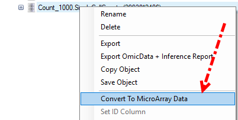
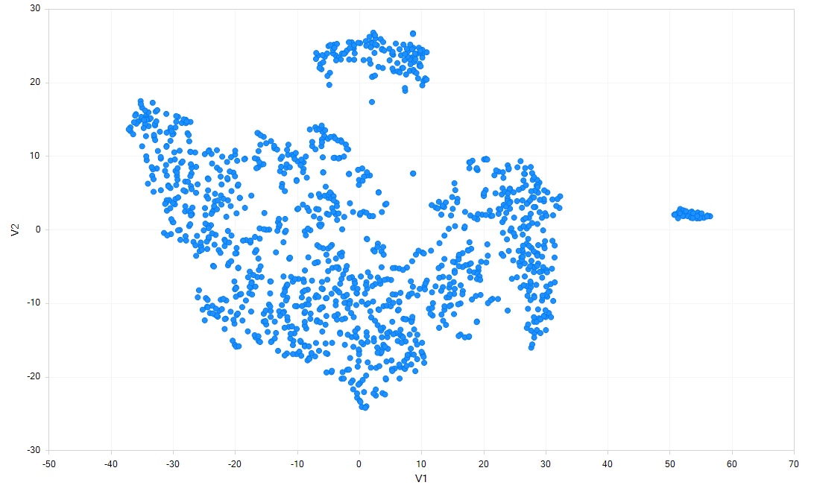
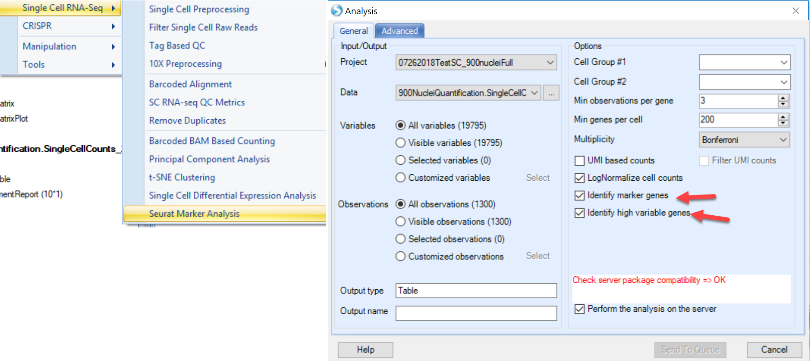
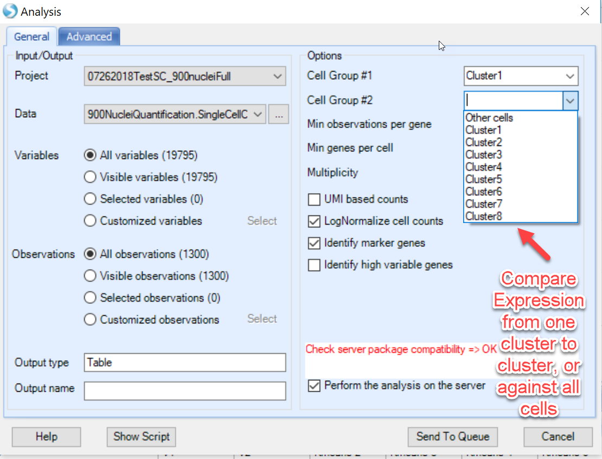
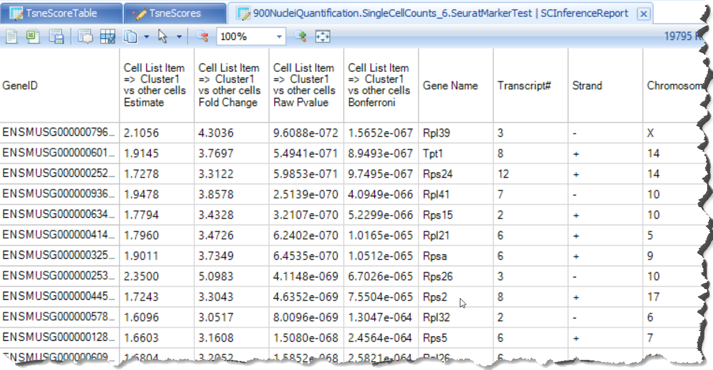
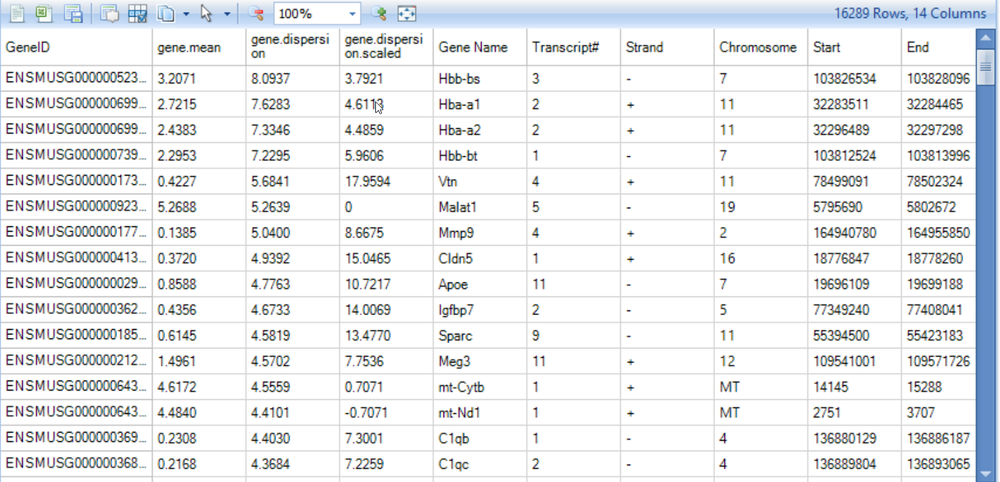
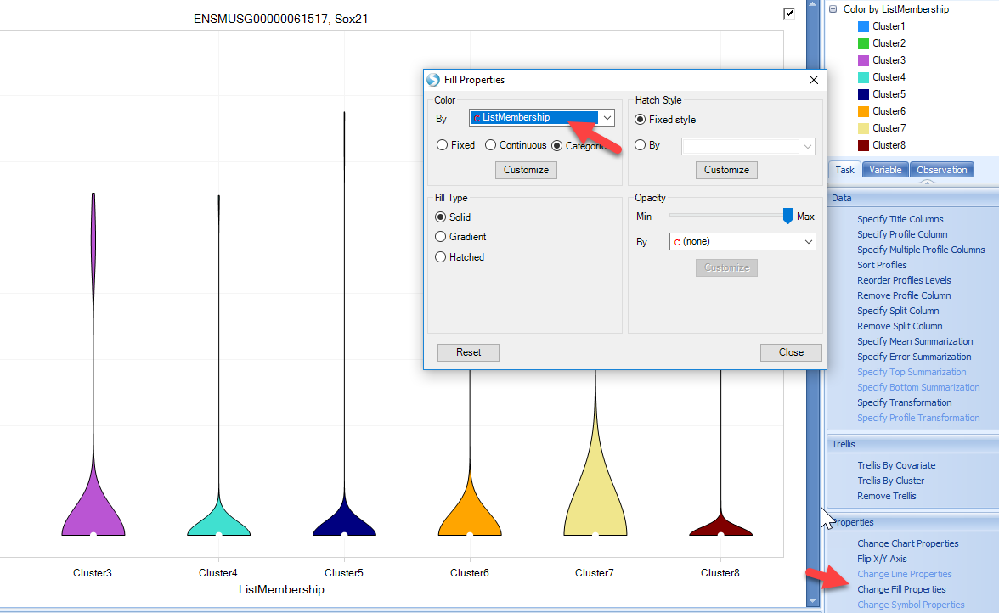
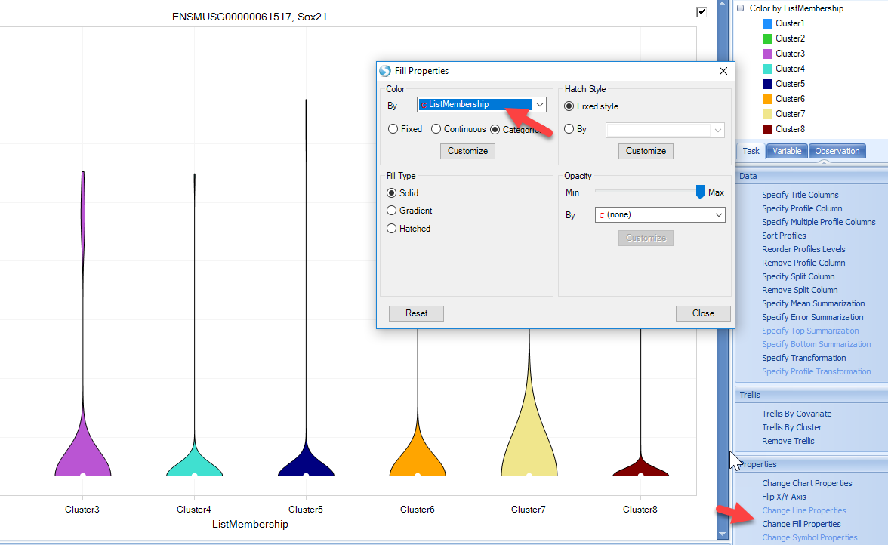
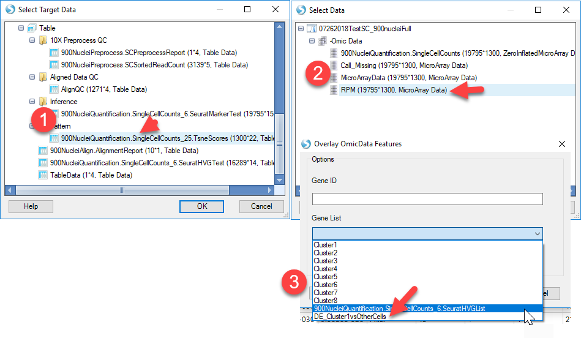

Downstream Analysis of Single Cell Data
Normalization
In ArrayStudio, we provide different methods for normalization. For Single cell RNA-seq data, we use TPM (transcript per million) for samples without UMI incorporated, and RPM (Counts/reads per million) for samples that contain UMI (due to the 5’ or 3’ biases). For both UMI datasets quantified in this tutorial, we will use RPM to normalize the data as we do have UMI for these samples.
If user haven’t check the option for Convert UMI count to transcript number in the advanced option for Report Single Cell Counts (like for the 10X data set), the Quantification module will only output one ZIM file and ZIM data object in GUI, and different from microarray type data, ZIM data might not be compatible with several other modules we are going to use, so before we do the normalization, user should right click on the UMI count data object, and convert it to MicroArray Data:

While in our tutorial case, if use did check the option for Convert UMI count to transcript number in the advanced option for Report Single Cell Counts, the Quantification module will output a ZIM data object and a normal microarray type data object for the converted count in GUI, user can just use the converted count data directly to do the normalization as follows.

For RPM normalization, we can go to NGS | Inference | Normalize RNA-Seq Data:

And choose TotalCount for the Normalization method, setting the scale target to 1,000,000, so the resulted data will be reads per million:

Interpretation of Single Cell Counts Data
The analysis of Single Cell RNA-seq analysis is a rapidly evolving field. OmicSoft has implemented several widely used R packages within ArrayStudio to allow users to conveniently use the GUI interface to interact with the data and further interpret their single cell data:

Cluster Classification
The Rtsne module in Array Studio will allow the user to cluster different cells with UMI counts, using the Rtsne package in R: T-Distributed Stochastic Neighbor Embedding using a Barnes-Hut Implementation RTSNE. To access this module, please go to Analysis | NGS | Single Cell RNA-Seq | t-SNE Clustering:

Most options can be saved as default. Users have the option to scale the data prior to PCA if desired. In this tutorial, we have left this option blank. We have also added an option for users to select the number of clusters expected (lower and upper bound of a range). Select the expected number of clusters, leave all other options as default and run the R t-SNE:

If user found that the Package compatibility is not ready for either local job or server job, please follow our instruction to set it up: R implementation of t-SNE t-SNE Module in ArrayStudio.
Once the job is finished, user can find a table report and a scatter plot view for this table in ArrayStudio:

The table report will look like this:

And the scatter plot will use “V1” as x-axis and “V2” as y-axis based on the table report:

Users can use the Kmeans columns to color the cells by cluster assignment, by clicking on Change Symbol Properties in the View Controller on the right side of the screen. Simply choose the columns to Color the view:

Clicking Close, you will now see the clustering will be shown for each cell:

Differential expression analysis - Seurat
Seurat is an R package developed by the Satija Lab, which has gradually become a popular package for QC, analysis, and exploration of single cell RNA-seq data. The Seurat module in Array Studio has not adopted the full Seurat package, but will allow users to run several modules in the Seurat package:

FindVariableGenes: Identifies "noisy genes" that account for the variation among single cells. FindMarkers: Finds markers (differentially expressed genes) for identified clusters.
This function is intended to use Single Cell UMI count data, and directly runs the Seurat in the R engine integrated with ArrayStudio.
To use this function, the ArrayServer admin can follow the instructions to integrate Seurat, or the user could run the analysis on their local server (http://www.arrayserver.com/wiki/index.php?title=R_packages_integration_with_ArrayStudio).
The current implementation of Seurat requires the cells used in the analysis to be present as List objects in the project. To generate lists of cells in each cluster, users can use the tSNE scores table and:

Repeat this with each cluster in the tSNE scores table, and you will have a group of lists (8 in the example above):

Now, you can input the choices in Seurat for the analysis you would like to perform:

In the screenshot above, notice how users can do pairwise comparisons of cluster to cluster (i.e. Cluster1 to Cluster3), or simply identify which genes are differentially expressed in the chosen cluster compared to all other cells. If interested in the highly variable genes, choose this option and click Send to Queue.
A number of objects will be output after the job is complete:

- Inference Report:
The inference report (and a volcano plot) generated will appear very similar to other differential expression modules in ArrayStudio, such as DESeq and General Linear Model:

- HVG table
This table is output from Seurat and shows each gene's average expression and dispersion, along with the gene's metadata (such as common gene name, genome location)

- HVG List
This will simply provide users a list of the highly variable genes identified by Seurat.
Differential expression analysis - SCDE
If users want to analyze the differential gene expression across different subset of cells, for instance, in upper chart, user want to see which genes show different expression level significantly between cluster 1 cluster 2, they can use the SCDE module in ArrayStudio. This function is intended to use Single Cell count data, and directly runs the R implementation of SCDE. SCDE was designed with small cell numbers in mind, such as a SMART-Seq experiment, and is not recommended for >1000 cells.
To run the SCDE to compare different clusters, user should have a design table to include the cluster information for each cell. Here are the steps to add the cluster information (based on the t-SNE result) to the design table:
Once the R-tsne is done and the scatter plot is generated, users can add the Kmeans cluster assignment from the tSNE scores table to the Design table for the Omic-Data object of SC counts.

Now user can run SCDE. To open this module, please go to Analysis | NGS | Single Cell RNA-Seq | Single Cell Differential Expression Analysis.

User can set the comparisons of cluster to cluster using the Group column and the newly added Kmeans assignment, and leave all other options in default and submit the job:

if user found that the package compatibility is not OK, it means that the R integrated with ArrayStudio is not ready to run scde package, please check with How to setup SCDE in R engine SCDE in R Engine to configure SCDE in ArrayStudio.
The SCDE module will generate an inference table and a volcano plot view for this table in ArrayStudio:
- A SCDE report table similar to DESeq Inference Report will be generated, containing fold-change and p-values for each tested variable. The default visualization, a volcano plot, will also be generated. Here is an example of output table:

- An example of volcano plot is shown below:

Visualize gene expression
ArrayStudio has developed a large number of rich visualizations to further explore data from OmicData and examine the results of downstream analyses. In addition to the inference reports and the associated Volcano plot views that allow users to visualize the distribution of fold change of all genes from say, one cluster to another, or one cluster to all cells, users can also visualize the normalized read counts and overlay the results with other cell metadata, such as cluster identity.
Generate Violin plot
A simply way to visualize expression of the highly variable or differentially expressed genes identified by Seurat would be to generate a Variable view in the RPM-Normalized OmicData object with all the single-cell counts:

As shown in the preview above, for each cell, the expression level of each gene will be plotted. In order to better view the data, users can first add cluster metadata to the Design table of this OmicData object. Simply select all the lists of clusters identified in the tSNE view, right-click and choose Add List Membership to table:

Simply choose the design table of the OmicData object with the RPM-normalized counts:

In the Variable View that was added to this OmicData object, notice that each cell is represented on the X-axis. Users can Specify Profile Column to group cells based on metadata, such as the Cluster Identity (from the added List Membership):

The scatter plot can be changed to a different style, such as the violin plot by selecting Change Profile Gallery

The resulting view will be a violin plot for all variables (genes) represented in the experiment. From here, users can search their gene of interest:

The view can be customized to show the gene symbol or color by cluster type:
 

However, in single-cell analyses, many genes will have zero counts, and users may want to quickly filter out genes. Using the View Controller on the right side of the screen, users can filter to specific gene lists, such at the list of Highly Variable Genes produced by Seurat in the previous steps. Simply right-click on the GeneID and add list:

Now, the view will be filtered down to the genes in the list, and users can scroll the view to visualize how genes are expressed in the clusters identified:

Overlay Expression onto tSNE plot
Another useful visualization would be to overlay gene expression onto the defined clusters from the tSNE view generated earlier. Within ArrayStudio, users can use Table | Overlay OmicData Features option:

In this function count data from an OmicData object is transposed onto the tSNE scatter plot generated using the tSNE function. Users can simply choose the target data (the tSNE plot) and the source data (the counts table), and either input a single gene ID or a list of up to 200 genes to visualize on the tSNE plot:

This will generate a new table object with the expression for the desired gene(s) added onto the tSNE table. In addition, a new view, called the ColorScatterView will be plotted, where each gene will be overlaid on a tSNE scatter view: